项目管理原型图 · 最新可定位稿
91 张当前阅读稿 · 2 张同日待比对 · 19 张历史稿。共 112 张独立图像，原图未修改。点击图片查看原尺寸。
最新批次：2026-09-11。修订候选并非已批准；最新按页面与状态判断。这里只浏览旧原型，不代表当前应用功能或新系统设计确认。
项目入口 · 1 张
 项目目录入口日期未证实 · 未编号 · 1440×900未找到批准记录
项目目录入口日期未证实 · 未编号 · 1440×900未找到批准记录概览 · 9 张
 概览主页 · 公共控件修订2026-09-10 · v1 · 1489×1056修订候选；未找到批准记录活动筛选2026-09-10 · v1 · 1490×1056旧审查快照；原归档标记当前有效，不等于新 AutoFlow 已批准活动展开2026-09-10 · v1 · 1491×1055旧审查快照；原归档标记当前有效，不等于新 AutoFlow 已批准新项目空态2026-09-10 · v1 · 1487×1058旧审查快照；原归档标记当前有效，不等于新 AutoFlow 已批准能力不可用2026-09-10 · v1 · 1487×1058旧审查快照；原归档标记当前有效，不等于新 AutoFlow 已批准初次加载2026-09-10 · v1 · 1487×1058旧审查快照；原归档标记当前有效，不等于新 AutoFlow 已批准活动加载失败2026-09-10 · v1 · 1487×1058旧审查快照；原归档标记当前有效，不等于新 AutoFlow 已批准概览加载失败2026-09-10 · v1 · 1488×1057旧审查快照；原归档标记当前有效，不等于新 AutoFlow 已批准关注事项返回2026-09-10 · v1 · 1487×1058旧审查快照；原归档标记当前有效，不等于新 AutoFlow 已批准
概览主页 · 公共控件修订2026-09-10 · v1 · 1489×1056修订候选；未找到批准记录活动筛选2026-09-10 · v1 · 1490×1056旧审查快照；原归档标记当前有效，不等于新 AutoFlow 已批准活动展开2026-09-10 · v1 · 1491×1055旧审查快照；原归档标记当前有效，不等于新 AutoFlow 已批准新项目空态2026-09-10 · v1 · 1487×1058旧审查快照；原归档标记当前有效，不等于新 AutoFlow 已批准能力不可用2026-09-10 · v1 · 1487×1058旧审查快照；原归档标记当前有效，不等于新 AutoFlow 已批准初次加载2026-09-10 · v1 · 1487×1058旧审查快照；原归档标记当前有效，不等于新 AutoFlow 已批准活动加载失败2026-09-10 · v1 · 1487×1058旧审查快照；原归档标记当前有效，不等于新 AutoFlow 已批准概览加载失败2026-09-10 · v1 · 1488×1057旧审查快照；原归档标记当前有效，不等于新 AutoFlow 已批准关注事项返回2026-09-10 · v1 · 1487×1058旧审查快照；原归档标记当前有效，不等于新 AutoFlow 已批准自动化 · 11 张
自动化列表2026-09-10 · v1 · 1487×1058旧审查快照；原归档标记当前有效，不等于新 AutoFlow 已批准搜索与排序2026-09-10 · v1 · 1487×1058旧审查快照；原归档标记当前有效，不等于新 AutoFlow 已批准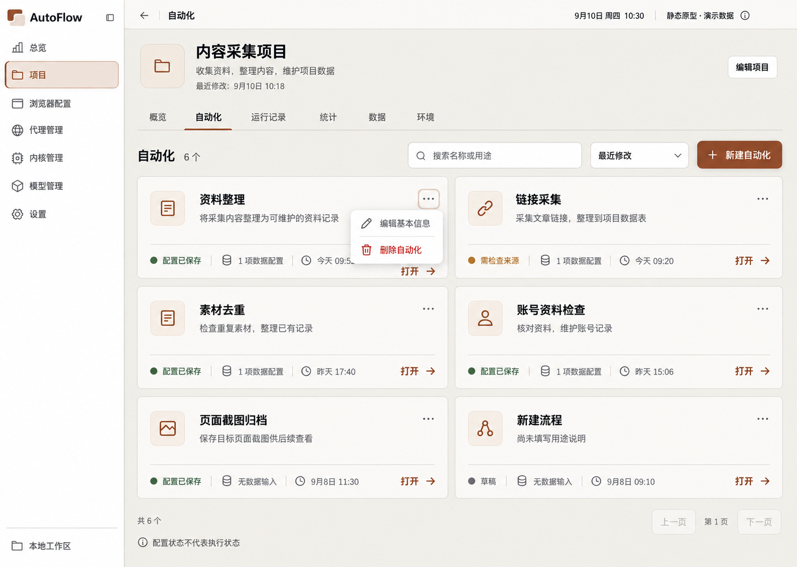
更多操作菜单2026-09-10 · v1 · 1487×1058旧审查快照；原归档标记当前有效，不等于新 AutoFlow 已批准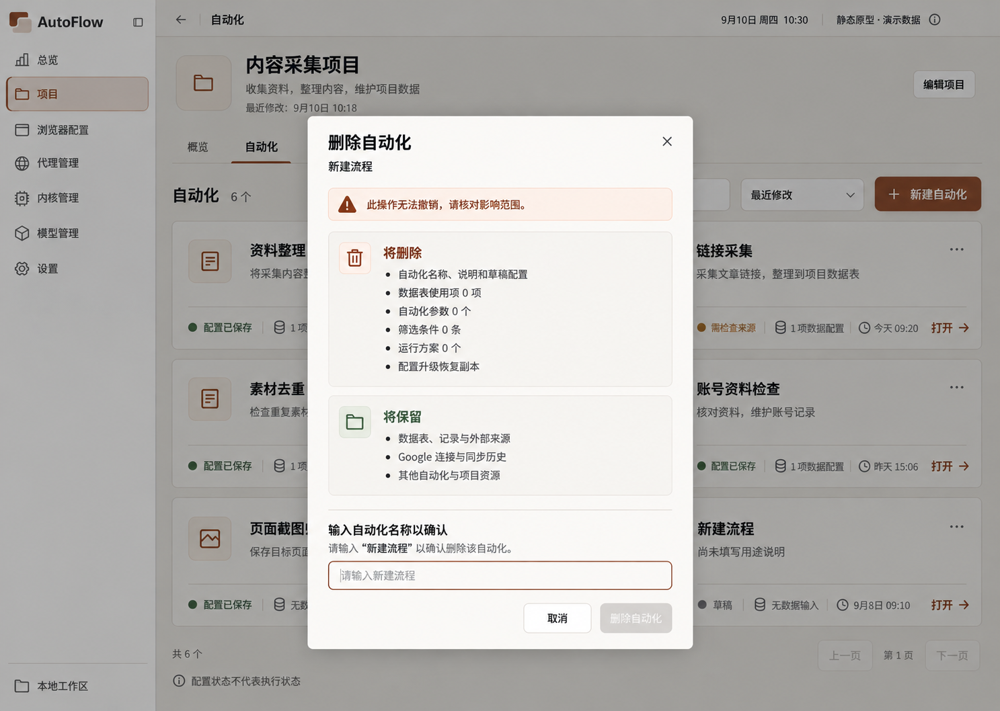
删除确认2026-09-10 · v1 · 1487×1058旧审查快照；原归档标记当前有效，不等于新 AutoFlow 已批准删除冲突2026-09-10 · v1 · 1487×1058旧审查快照；原归档标记当前有效，不等于新 AutoFlow 已批准自动化空态 · 公共控件修订2026-09-10 · v1 · 1489×1056修订候选；未找到批准记录无匹配结果2026-09-10 · v1 · 1487×1058旧审查快照；原归档标记当前有效，不等于新 AutoFlow 已批准加载中2026-09-10 · v1 · 1487×1058旧审查快照；原归档标记当前有效，不等于新 AutoFlow 已批准加载失败2026-09-10 · v1 · 1487×1058旧审查快照；原归档标记当前有效，不等于新 AutoFlow 已批准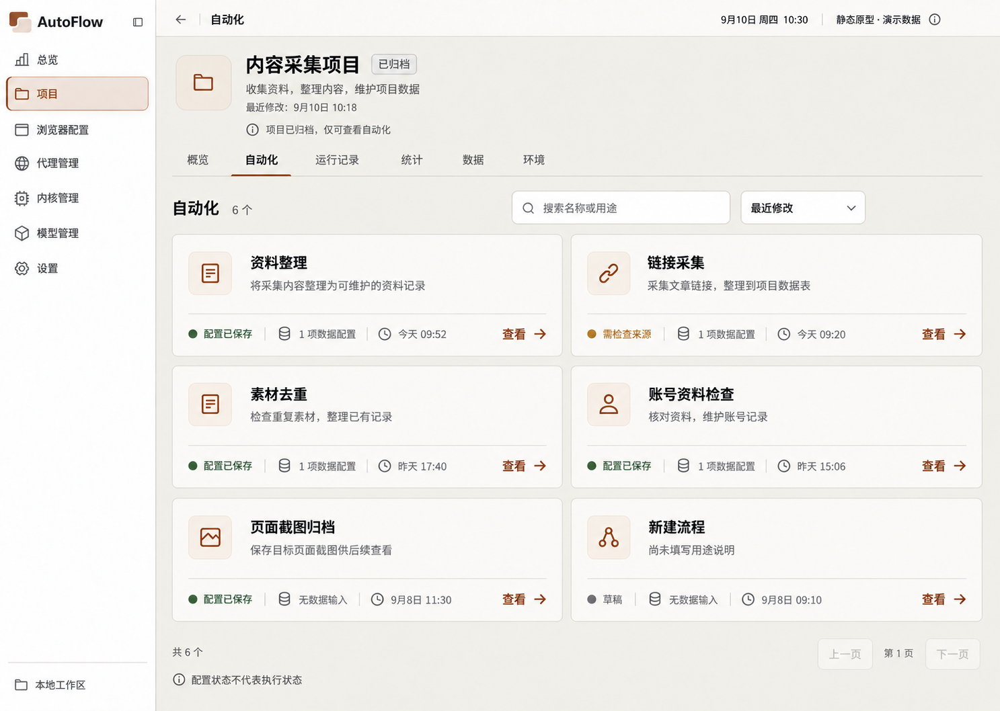
归档只读2026-09-10 · v1 · 1487×1058旧审查快照；原归档标记当前有效，不等于新 AutoFlow 已批准返回列表恢复2026-09-10 · v1 · 1487×1058旧审查快照；原归档标记当前有效，不等于新 AutoFlow 已批准
运行记录与人工处理 · 21 张
运行批次列表2026-09-10 · v1 · 1487×1058旧审查快照；原归档标记当前有效，不等于新 AutoFlow 已批准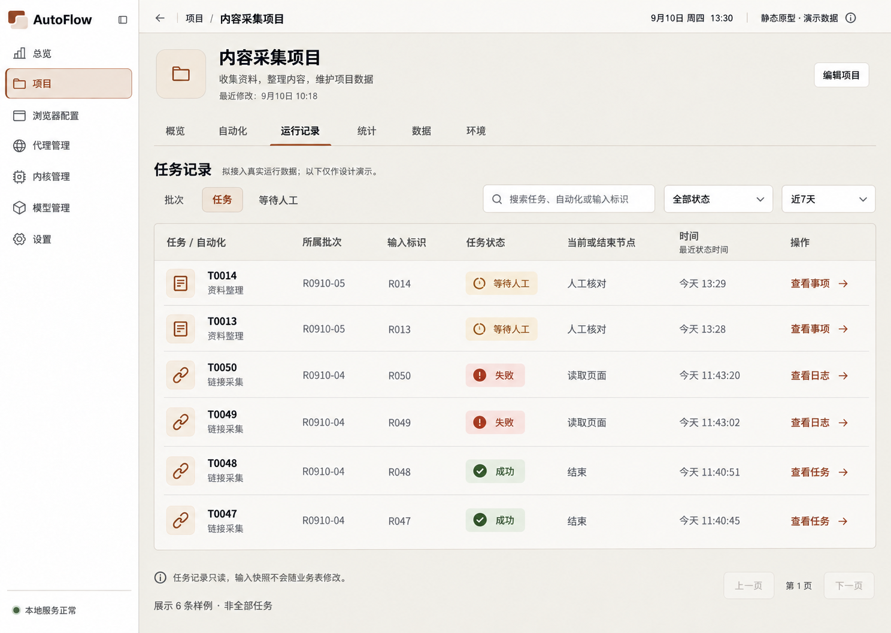
任务列表2026-09-10 · v2 · 1488×1057旧审查快照；原归档标记当前有效，不等于新 AutoFlow 已批准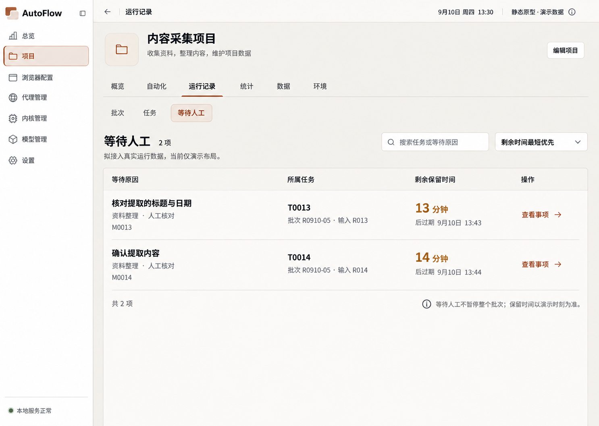
等待人工列表2026-09-10 · v2 · 1486×1058旧审查快照；原归档标记当前有效，不等于新 AutoFlow 已批准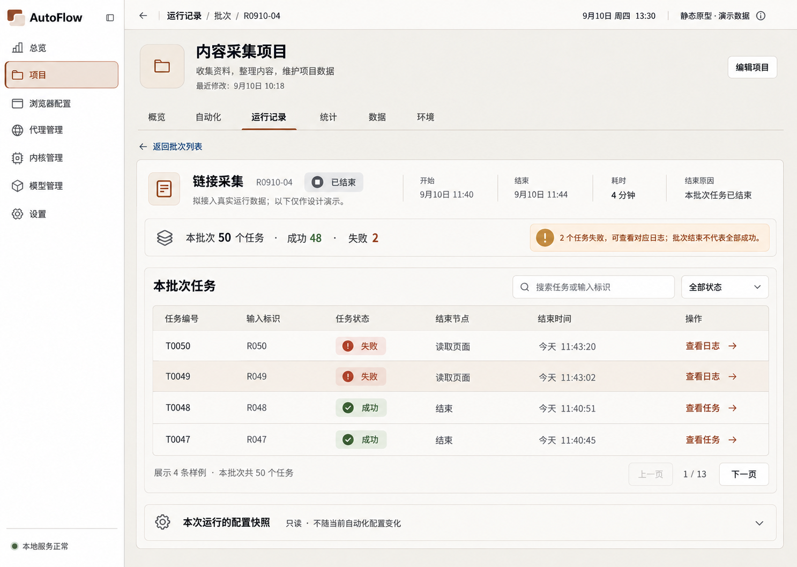
批次详情2026-09-10 · v2 · 1487×1058旧审查快照；原归档标记当前有效，不等于新 AutoFlow 已批准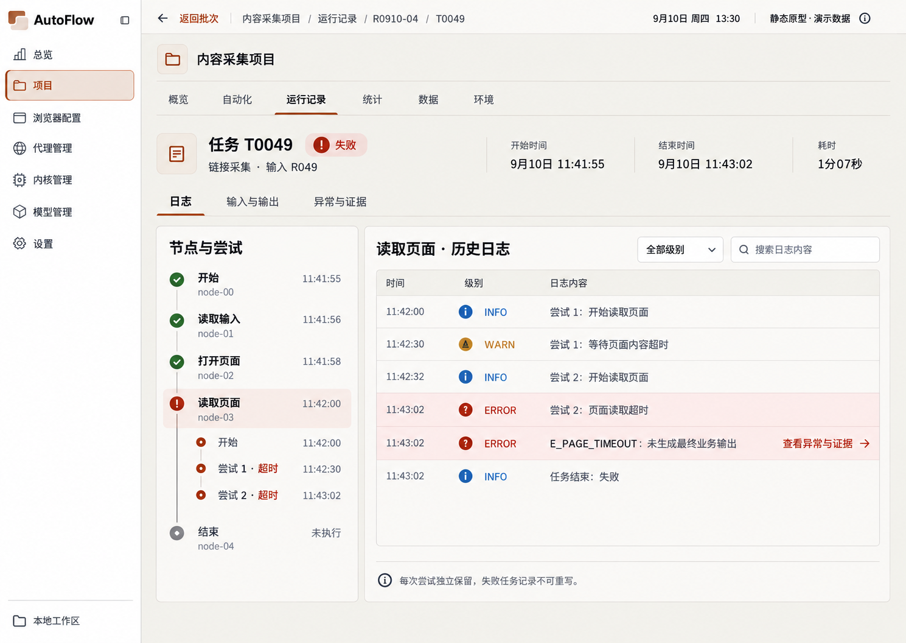
任务历史日志 · 公共控件修订2026-09-10 · v1 · 1489×1056修订候选；未找到批准记录任务输入与输出2026-09-10 · v2 · 1487×1058旧审查快照；原归档标记当前有效，不等于新 AutoFlow 已批准任务异常与证据2026-09-10 · v2 · 1487×1058旧审查快照；原归档标记当前有效，不等于新 AutoFlow 已批准人工处理详情2026-09-10 · v2 · 1487×1058旧审查快照；原归档标记当前有效，不等于新 AutoFlow 已批准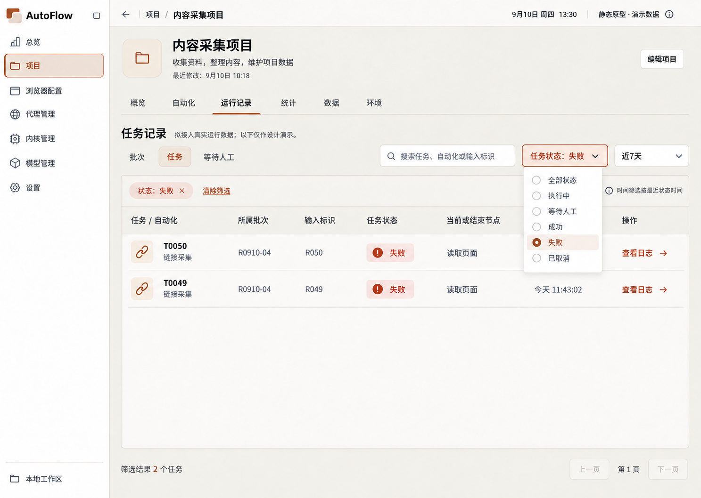
任务筛选2026-09-10 · v1 · 1487×1058旧审查快照；原归档标记当前有效，不等于新 AutoFlow 已批准能力不可用2026-09-10 · v1 · 1487×1058旧审查快照；原归档标记当前有效，不等于新 AutoFlow 已批准运行记录空态2026-09-10 · v1 · 1487×1058旧审查快照；原归档标记当前有效，不等于新 AutoFlow 已批准无匹配结果2026-09-10 · v1 · 1487×1058旧审查快照；原归档标记当前有效，不等于新 AutoFlow 已批准加载中2026-09-10 · v1 · 1487×1058旧审查快照；原归档标记当前有效，不等于新 AutoFlow 已批准刷新失败2026-09-10 · v1 · 1487×1058旧审查快照；原归档标记当前有效，不等于新 AutoFlow 已批准停止确认2026-09-10 · v1 · 1487×1058旧审查快照；原归档标记当前有效，不等于新 AutoFlow 已批准强制停止确认2026-09-10 · v1 · 1487×1058旧审查快照；原归档标记当前有效，不等于新 AutoFlow 已批准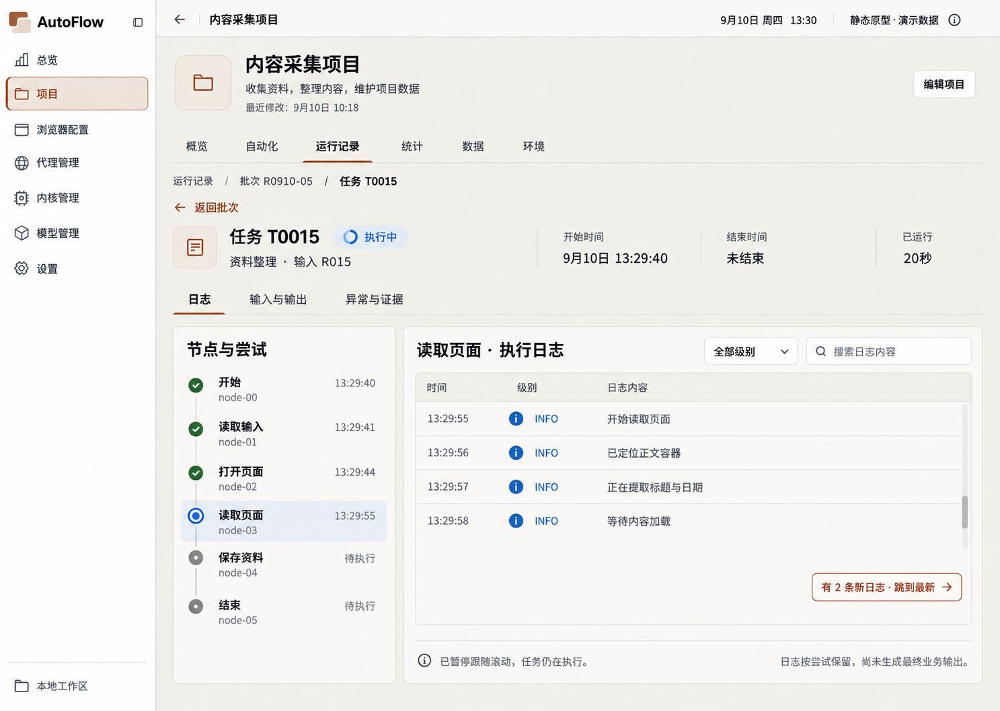
运行中任务日志2026-09-10 · v1 · 1487×1058旧审查快照；原归档标记当前有效，不等于新 AutoFlow 已批准人工检查失败2026-09-10 · v1 · 1487×1058旧审查快照；原归档标记当前有效，不等于新 AutoFlow 已批准人工完成确认2026-09-10 · v1 · 1487×1058旧审查快照；原归档标记当前有效，不等于新 AutoFlow 已批准人工等待过期2026-09-10 · v1 · 1487×1058旧审查快照；原归档标记当前有效，不等于新 AutoFlow 已批准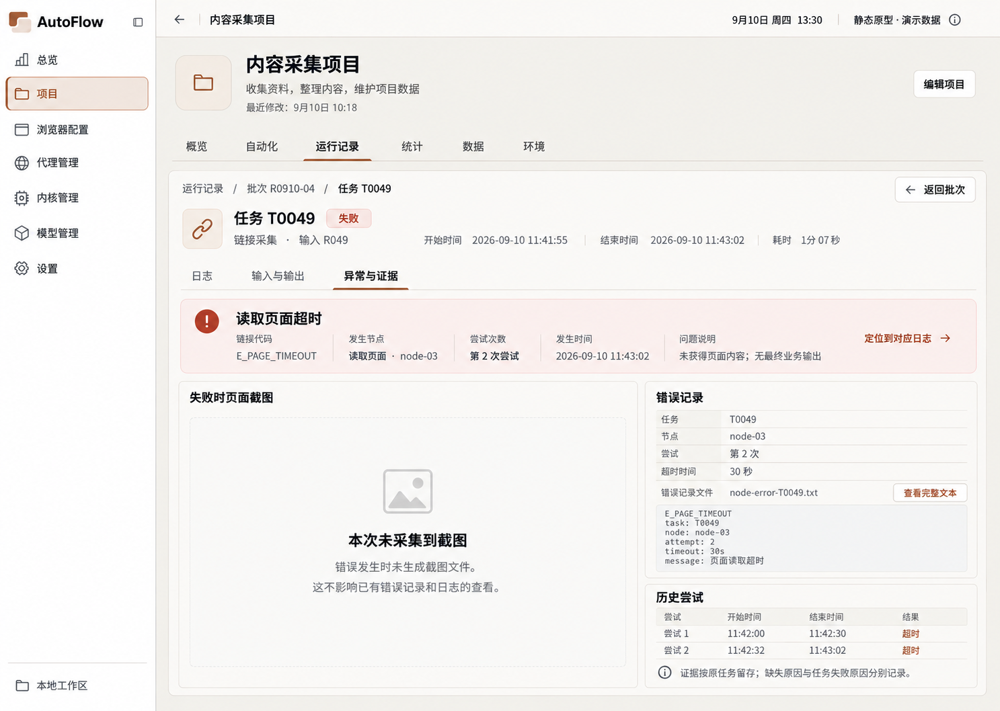
证据缺失2026-09-10 · v1 · 1487×1058旧审查快照；原归档标记当前有效，不等于新 AutoFlow 已批准
统计 · 11 张
统计主页2026-09-10 · v1 · 1487×1058旧审查快照；原归档标记当前有效，不等于新 AutoFlow 已批准日期范围2026-09-10 · v1 · 1487×1058旧审查快照；原归档标记当前有效，不等于新 AutoFlow 已批准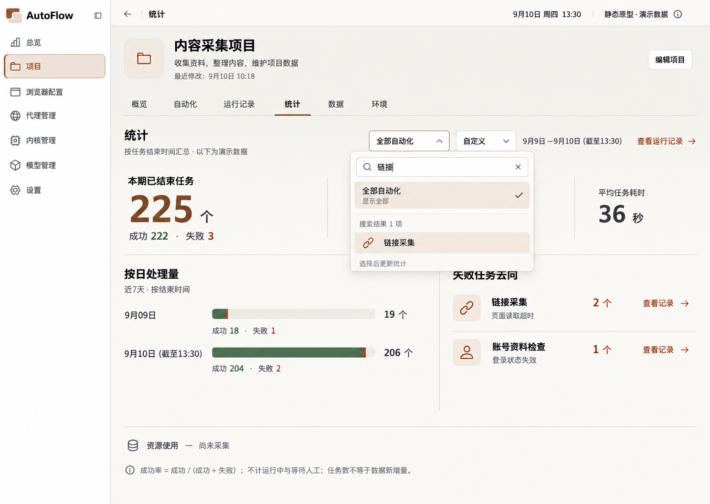
自动化筛选2026-09-10 · v1 · 1487×1058旧审查快照；原归档标记当前有效，不等于新 AutoFlow 已批准统计空态2026-09-10 · v1 · 1487×1058旧审查快照；原归档标记当前有效，不等于新 AutoFlow 已批准加载中2026-09-10 · v1 · 1487×1058旧审查快照；原归档标记当前有效，不等于新 AutoFlow 已批准统计加载失败 · 公共控件修订2026-09-10 · v1 · 1489×1056修订候选；未找到批准记录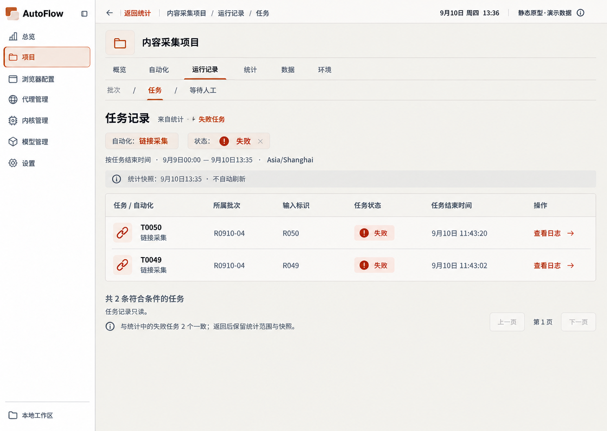
统计快照下钻任务2026-09-10 · v2 · 1489×1056修订候选；未找到批准记录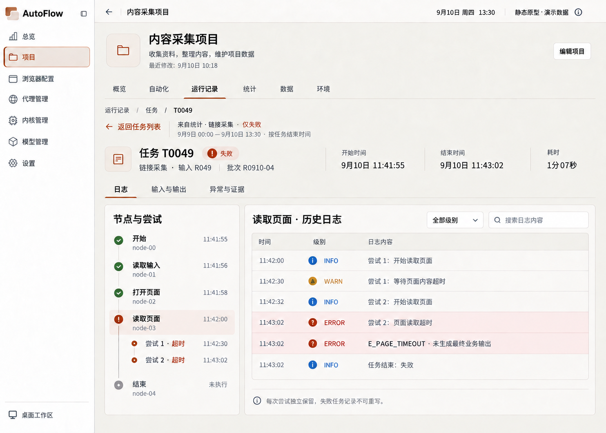
任务详情返回2026-09-10 · v1 · 1484×1060旧审查快照；原归档标记当前有效，不等于新 AutoFlow 已批准返回统计恢复条件2026-09-10 · v1 · 1487×1058旧审查快照；原归档标记当前有效，不等于新 AutoFlow 已批准统计指标口径说明2026-09-10 · v2 · 1489×1056修订候选；未找到批准记录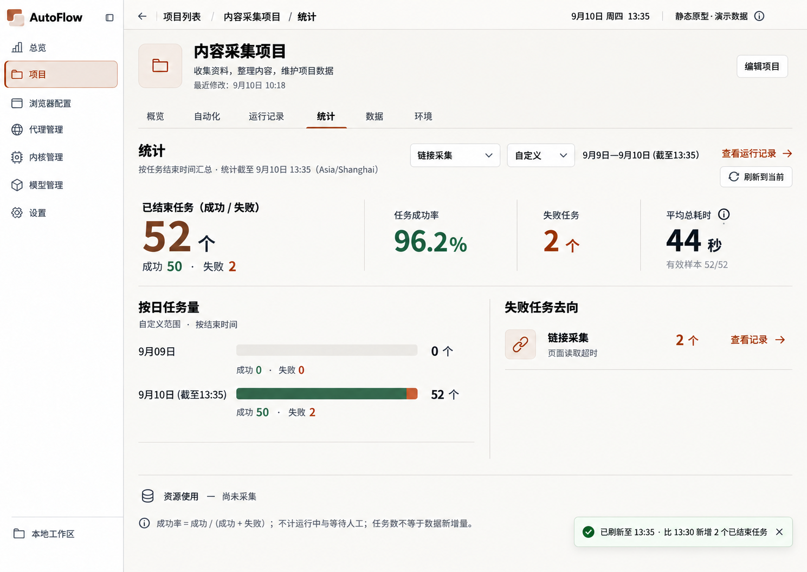
刷新到当前后的统计汇总2026-09-10 · v2 · 1489×1056修订候选；未找到批准记录
环境 · 18 张
运行环境主页2026-09-10 · v1 · 1487×1058旧审查快照；原归档标记当前有效，不等于新 AutoFlow 已批准运行环境详情2026-09-10 · v1 · 1487×1058旧审查快照；原归档标记当前有效，不等于新 AutoFlow 已批准等待人工环境2026-09-10 · v1 · 1487×1058旧审查快照；原归档标记当前有效，不等于新 AutoFlow 已批准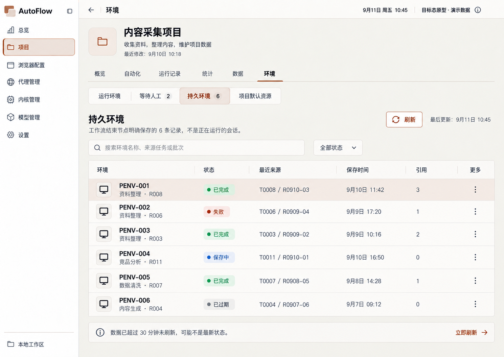
持久环境列表 v32026-09-11 · v3 · 1490×1056修订候选；未找到批准记录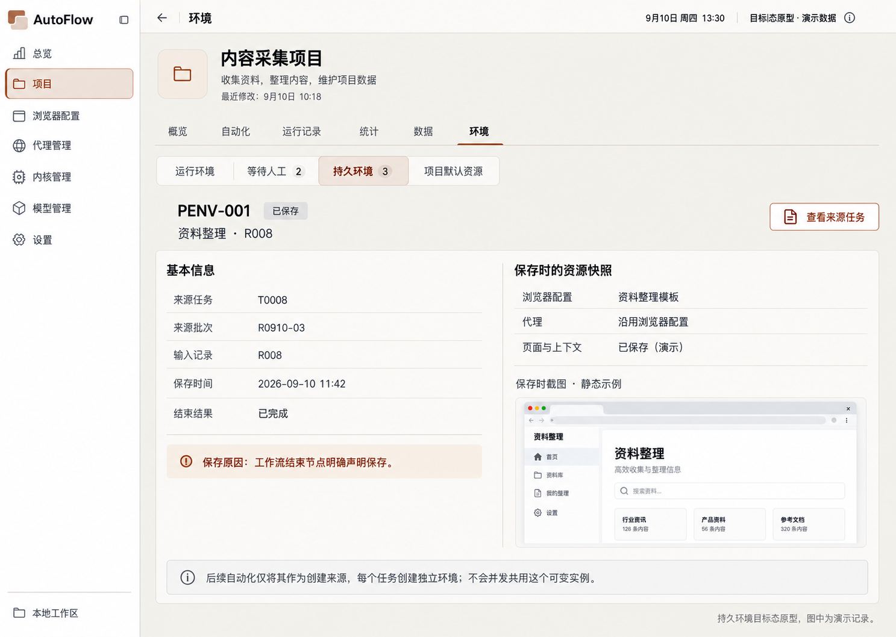
持久环境详情2026-09-10 · v1 · 1487×1058旧审查快照；原归档标记当前有效，不等于新 AutoFlow 已批准项目默认资源 · 公共控件修订2026-09-10 · v1 · 1489×1056修订候选；未找到批准记录资源影响与失效2026-09-10 · v1 · 1487×1058旧审查快照；原归档标记当前有效，不等于新 AutoFlow 已批准资源版本冲突2026-09-10 · v1 · 1487×1058旧审查快照；原归档标记当前有效，不等于新 AutoFlow 已批准资源未保存离开2026-09-10 · v1 · 1487×1058旧审查快照；原归档标记当前有效，不等于新 AutoFlow 已批准运行时可用性状态2026-09-10 · v1 · 1487×1058旧审查快照；原归档标记当前有效，不等于新 AutoFlow 已批准环境重命名校验与冲突2026-09-11 · v1 · 1586×992修订候选；未找到批准记录删除环境影响预览2026-09-11 · v1 · 1586×992修订候选；未找到批准记录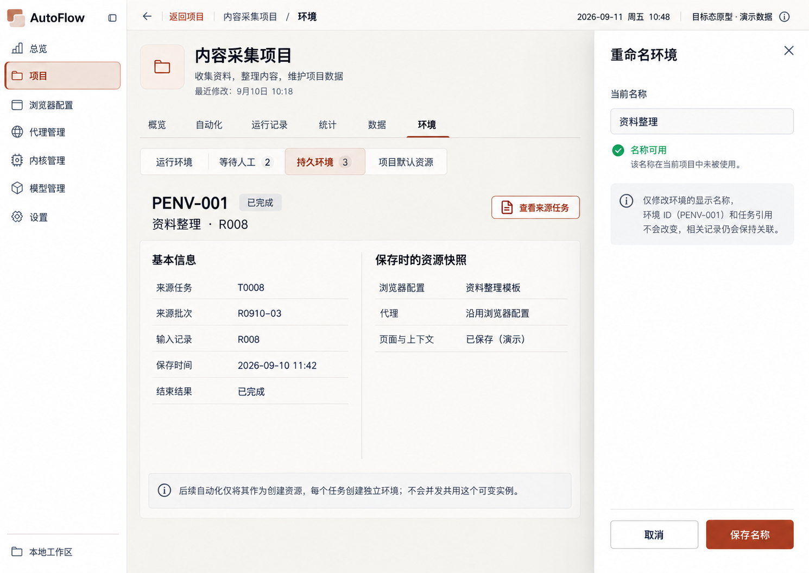
环境重命名抽屉 v32026-09-11 · v3 · 1490×1055修订候选；未找到批准记录环境保存警告2026-09-11 · v2 · 1489×1056修订候选；未找到批准记录环境引用失效2026-09-11 · v2 · 1489×1056修订候选；未找到批准记录环境清理结果待核验2026-09-11 · v2 · 1490×1056修订候选；未找到批准记录环境清理失败2026-09-11 · v2 · 1490×1056修订候选；未找到批准记录环境清理完成2026-09-11 · v2 · 1489×1056修订候选；未找到批准记录
公共控件 · 1 张
项目公共控件规范2026-09-10 · v1 · 1489×1056修订候选；未找到批准记录
同日顺序未明 · 记录被占用
缺少可证明先后的记录，暂不指定唯一最新稿。
记录被占用 · 数据规则 v22026-09-10 · v2 · 1490×1056修订候选；未找到批准记录记录被占用 · 公共控件 v12026-09-10 · v1 · 1489×1056修订候选；未找到批准记录
历史候选与被替代稿（不作为最新稿）
概览主页2026-09-10 · v1 · 1487×1058旧审查快照；原归档标记当前有效，不等于新 AutoFlow 已批准自动化空态2026-09-10 · v1 · 1487×1058旧审查快照；原归档标记当前有效，不等于新 AutoFlow 已批准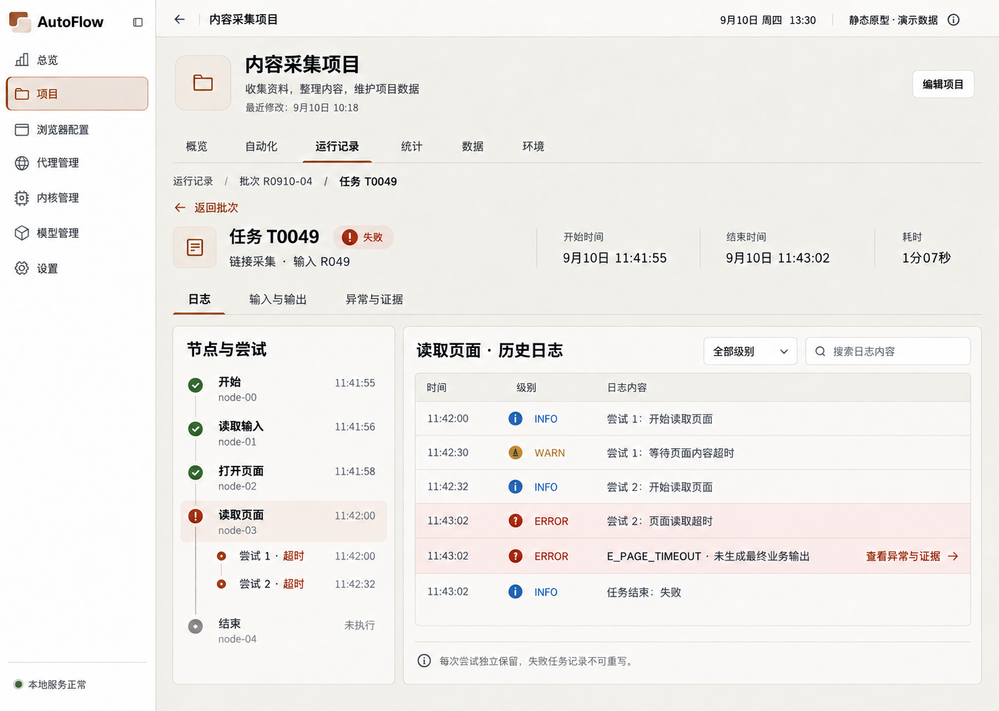
任务历史日志2026-09-10 · v2 · 1486×1058旧审查快照；原归档标记当前有效，不等于新 AutoFlow 已批准02-manual-list2026-09-10 · v1 · 1487×1058未找到批准记录07-manual-detail2026-09-10 · v1 · 1487×1058未找到批准记录02-information-first2026-09-10 · v2 · 1487×1058未找到批准记录03-scene-and-dock2026-09-10 · v2 · 1487×1058未找到批准记录加载失败2026-09-10 · v1 · 1487×1058旧审查快照；原归档标记当前有效，不等于新 AutoFlow 已批准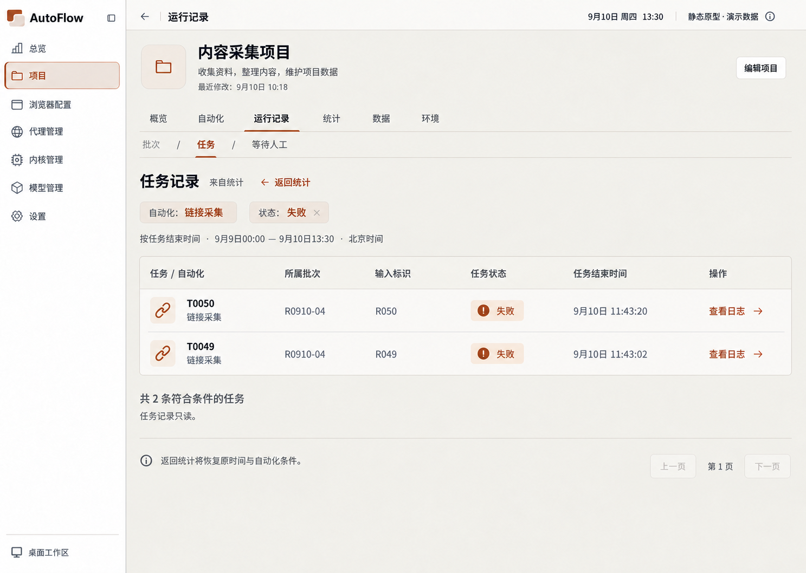
统计下钻任务2026-09-10 · v1 · 1487×1058旧审查快照；原归档标记当前有效，不等于新 AutoFlow 已批准01-trend-first2026-09-10 · v1 · 1487×1058未找到批准记录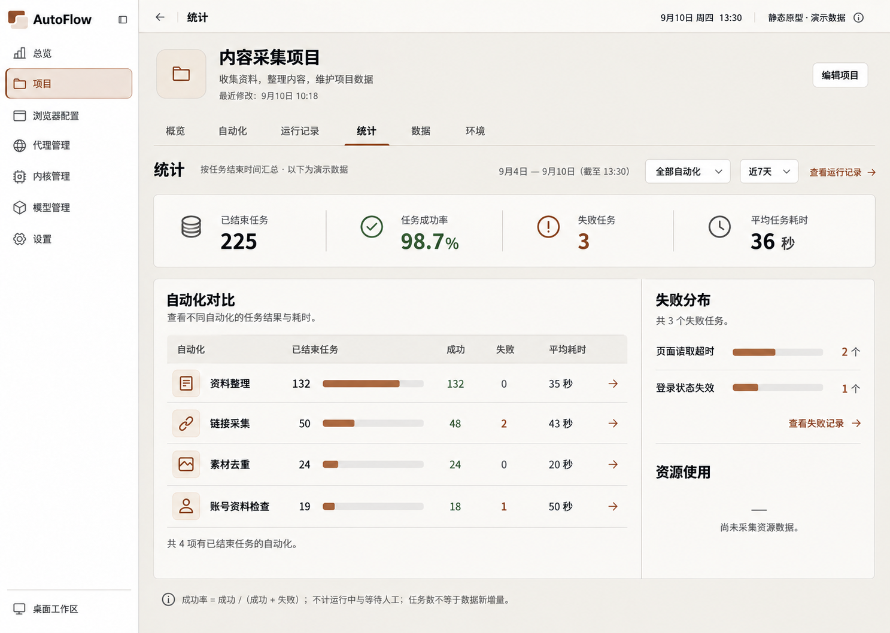
02-workflow-comparison2026-09-10 · v1 · 1487×1058未找到批准记录01-catalog-table2026-09-10 · v1 · 1487×1058未找到批准记录03-table-preview2026-09-10 · v1 · 1487×1058未找到批准记录持久环境列表2026-09-10 · v1 · 1487×1058旧审查快照；原归档标记当前有效，不等于新 AutoFlow 已批准项目默认资源编辑2026-09-10 · v1 · 1487×1058旧审查快照；原归档标记当前有效，不等于新 AutoFlow 已批准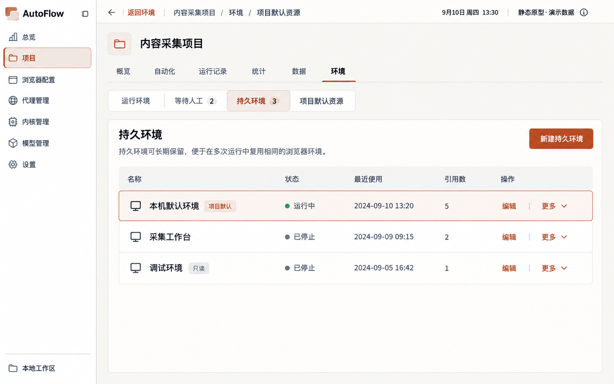
持久环境列表 v12026-09-11 · v1 · 1586×992修订候选；未找到批准记录重命名与备注编辑 v12026-09-11 · v1 · 1489×1056修订候选；未找到批准记录01-list-first2026-09-10 · v1 · 1486×1058未找到批准记录03-split-workspace2026-09-10 · v1 · 1486×1058未找到批准记录